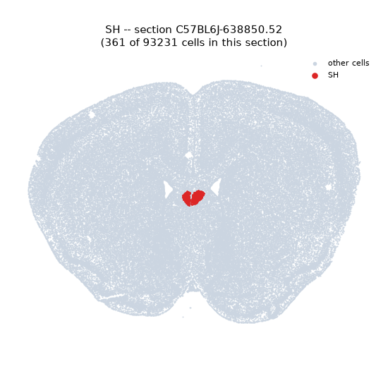
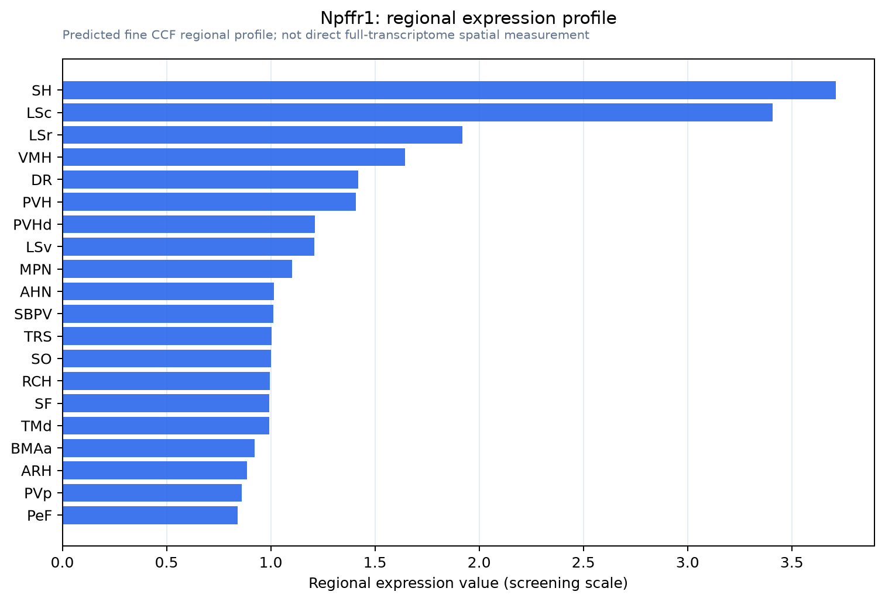

Npffr1
Neuropeptide FF receptor 1 (G-protein coupled receptor 147) (RFamide-related peptide receptor OT7T022)
Spatial tier: RESTRICTED · Class: GPCR · Top region: SH (Septohippocampal nucleus) · Positive regions: 16/554
44.4Discovery Score
42.0Targetability Score
CEvidence grade C
What this means: Npffr1: fine CCF profile is restricted toward SH (top regions: SH, LSc, LSr, VMH, DR; 16 positive regions); direct spatial validation is still required.
Function in SH: evidence, prediction, innovation
- Gene function
- Npffr1 encodes NPFFR1 (GPR147), a Gi-coupled class A GPCR activated by RFamide peptides, most potently by RFRP-1 and RFRP-3, the mammalian gonadotrophin-inhibitory hormone, and also by neuropeptide FF. Activation inhibits adenylate cyclase, opens GIRK channels and closes calcium channels, reducing excitability and transmitter release. It is best known for suppressing GnRH neurons and for modulating opioid analgesia and blood pressure.
- Region function
- The septohippocampal nucleus is a small cell group at the dorsomedial tip of the septum, continuous with the medial septum and diagonal band; the septohippocampal system it belongs to paces hippocampal theta rhythm through cholinergic and GABAergic projections that gate memory encoding and arousal.
- Published in this region
- inferred No region-specific literature found. Higo 2021 mapped Npffr1 mRNA across rat brain with high-sensitivity in situ hybridisation and localised it to neuroendocrine-related populations (GnRH, oxytocin, vasopressin, kisspeptin neurons) rather than the septohippocampal nucleus; the nearest relevant anatomy is RFRP and NPFF fibre innervation of the septal region, and the broader role of this system in stress and HPA-axis activation (Lin 2017; Kim 2016).
- Predicted function
- Prediction: in septohippocampal neurons NPFFR1 would provide Gi-mediated inhibition, hyperpolarising pacemaker cells through GIRK channels and slowing the septal drive to hippocampal theta. Because RFRP neurons are strongly modulated by photoperiod, stress and gonadal steroids, this would be a route by which endocrine state sets hippocampal rhythm and memory. Intraseptal RFRP-3 is predicted to reduce theta power and impair encoding, while the antagonist RF9 or an Npffr1 knockout should disinhibit septal firing, raise theta power, and prevent the normal stress-induced suppression of theta-dependent memory.
- Innovation
- ★★★★★ 5/5 A reproductive-endocrine receptor sitting on the theta pacemaker would be a striking hormone-to-memory link, and it has not been tested despite available knockouts and peptide tools.
- Tools
- Npffr1 (Gpr147) knockout mice; peptide agonists RFRP-3 and NPFF; antagonists RF9 (not fully selective) and GJ14; anti-NPFFR1 antibodies; septal targeting with ChAT-IRES-Cre (JAX 006410), Pvalb-IRES-Cre and Vgat-IRES-Cre.
- References
Direct evidence located at the region
No Allen ISH section could be located at this region's centroid for the recorded experiments.
Look it up yourself: Allen Mouse Brain ISH for Npffr1Allen reference atlas: SH (structure 333)ABC Atlas MERFISH viewer(in the ABC Atlas choose dataset MERFISH-C57BL6J-638850-CCF, colour cells by gene "Npffr1" or by parcellation_substructure "SH")All genes confined to SH + 3-D brain
Direct spatial evidence
MERFISH REGION LOCATOR

Regional expression figure

Predicted WMB × fine-CCF profile; not direct full-transcriptome spatial measurement.
Spatial profile
Evidence and specificity
- Evidence status
- PREDICTED_FINE
- Direct sources
- None; predicted localization only
- Exclusive threshold
- 12 positive regions out of 554
- Spatial specificity
- 0.326
- Top-region fraction
- 0.080
- Filter status
- PASS
Interpretation limits
- Cell-type-to-region projection is imputed expression, not direct spatial measurement.
- Adult reference atlases do not establish stability across age, sex, strain, state, or disease.
- Transcript abundance does not guarantee protein abundance or genetic-tool performance.